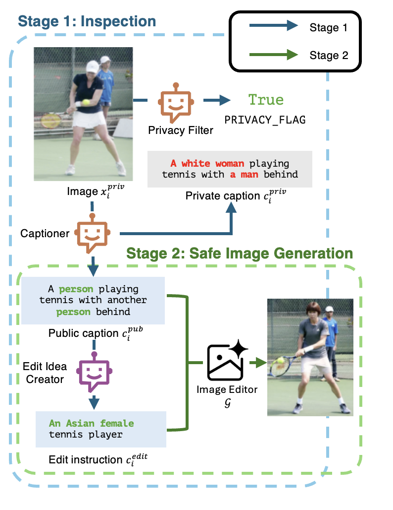
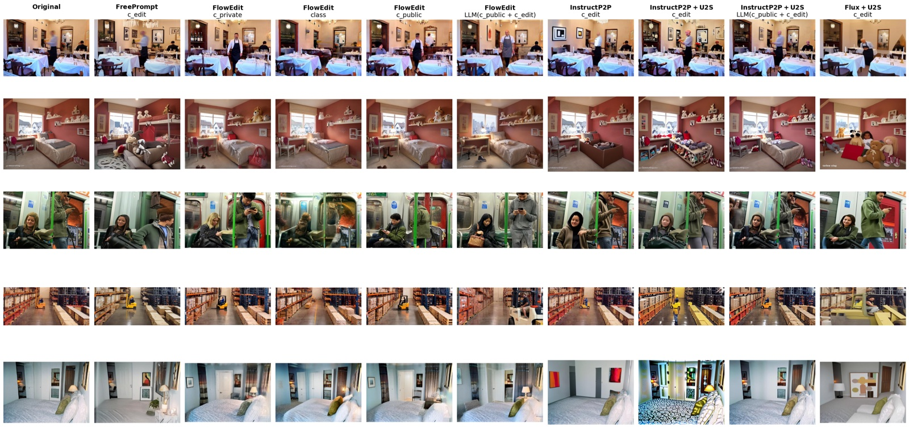

✔ Structurally Consistent Identity Privacy


✔ Demographic Neutralization


✔ Non-human Content Anonymization


Examples from Unsafe2Safe (U2S). For each case, the model converts an unsafe image into a privacy-preserving safe version. Examples demonstrate key capabilities that may appear simultaneously: (1) structure-preserving full body anonymization, (2) demographic neutralization (race entropy ↑), and (3) obfuscation of non-human confidential details.
Abstract
Large image datasets often contain privacy-sensitive content, and deep models trained on them can memorize and leak identifiable information. We introduce Unsafe2Safe, a scalable two-stage framework that converts raw image datasets into anonymized yet utility-preserving versions. In Stage 1, a vision-language model detects privacy risks and produces a privacy-safe public caption together with an LLM-generated edit instruction. In Stage 2, a diffusion editor uses these dual prompts to rewrite only identity-revealing regions while preserving structure and task-relevant semantics.
To evaluate anonymization effectiveness, we propose a unified suite of Quality, Cheating, Privacy, and Utility scores. Across Caltech101 and MIT Indoor67, Unsafe2Safe substantially reduces face similarity, text similarity, and demographic predictability while maintaining downstream accuracy comparable to models trained on raw data. Fine-tuning instruction-following editors on our generated pairs further improves both privacy and utility. Unsafe2Safe provides a practical path toward constructing large-scale, privacy-safe datasets without compromising visual semantics or model performance.
Method


BibTeX
@article{minh2026unsafe2safe,
title={Unsafe2Safe: Controllable Image Anonymization for Downstream Utility},
author={Minh Dinh Trong and SouYoung Jin},
journal={CVPR},
year={2026}
}